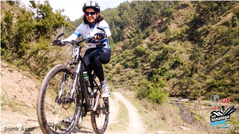
Monali Haldipur had a smile on her face in the beginning of the race. But that was short lived. (Picture: Samir Azad/HASTPA)She was prepared to crawl to the finish line. Face caked with dirt, legs half-paralysed with cramps, and body on the brink of collapse, but Monali wouldn’t give up. She had imagined a different ending. Not one of dismay and failure, but of hope and strength. Monali would laugh inwardly at her predicament and also at the skin-hugging synthetic jersey she wore that grew clammy from the heat and raised a storm on her skin. But she derived some kind of sadistic pleasure in this physical and mental collapse. “I don’t know what will break first,” she told her friend Aditya, “me or the bicycle.”
A flight attendant at Lufthansa, 37-year-old Monali Haldipur was one of the only five women participants at the MTB Shimla, a two-day 130 km endurance mountain bicycle race that tears into your determination and tests your true grit. Consider this: out of 63 participants, only five were women and out of them, four were first-time riders. Sure, that’s a small number. But interestingly, four completed the race, while out of 58 male participants, 15 couldn’t finish. Monali finished third in the women’s category, 36th overall out of 63.
The MTB Shimla advertisement banner pegged the race as ‘not for the faint-hearted’. Rightly so, it wasn’t. “It was a very intense and a tough experience. The first day was brutal, I doubt anyone cycled the whole way without stopping and hiking multiple times up those steep slopes,” says 37-year-old Gautam Chima, a participant at the race.
More than 60 per cent of the trails were steep uphill sections punctuated with sporadic downhill, six river crossings and extremely narrow single tracks passing through quaint villages, where riding wasn’t possible and you had to haul your bike on your shoulders. The elevation gain rose from 1500m to 1900m (6200 ft) at some places.
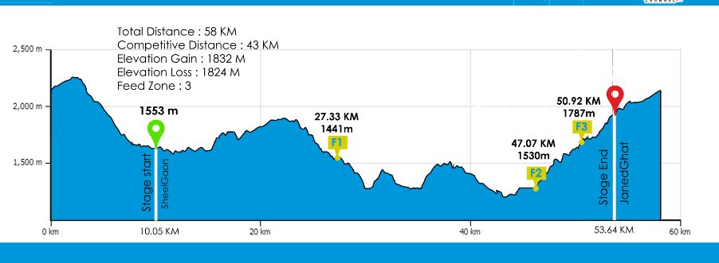
Race route Day 1. (GRAPHIC: HASTPA)“90 per cent of it was rideable,” said Ashish Sood, director at HASTPA, a non-profit organisation and organisers of the MTB Shimla race. “Repeat riders knew what they were getting into, but first-time riders didn’t know what to expect.”
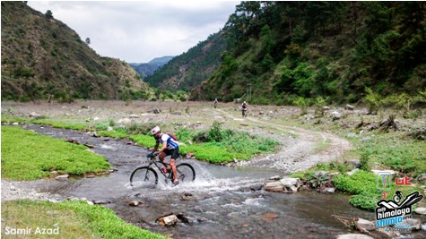
One of the few stream crossings at the event. (Picture: HASTPA)The race came as a shock to Monali. In fact, her only training was the occasional 35-40 km jaunts in and around Delhi on her bicycle. “I wasn’t entirely physically prepared to take up the challenge because I hadn’t done this before. I even messed up the gear-shifting bit because hill riding is very different from city. Honestly, I didn’t know how to shift gears so quickly from uphill to downhill,” she said. When she asked an experienced rider, “How do you transition from a lower gear to a higher one fast?” he was perplexed at her seemingly odd question. “He gave me a “you’re supposed to know this” kind of look, but he advised me to “change gears well in advance before you start climbing or descending”.
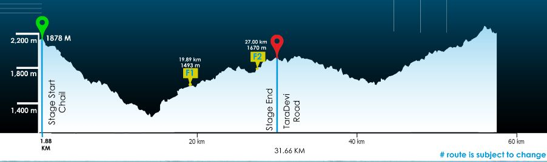
Race route day 2. Total distance-53km. Elevation gain-1448 m.Although the race was an eye-opener for her, initially she wasn’t too keen to participate when she learnt it was a race. “I didn’t want to compete. But then my friends wanted to do off-road hill riding so I decided to give them company and have fun. I told them I will go at turtle speed, but will finish at any cost. For me, winning was secondary,” she said.
As it turned out, women participants had similar motivations to do the race. It was less a matter of pride and more about proving to themselves that they’re capable enough to do it. Said Ashish Sood: “We saw the best women riders take part this year. Out of five, four finished the race. Last year, only one managed to complete out of six. Clearly the quality of women riders at MTB Shimla has gone up and hopefully we will see more women participation in future,” he said.
Given that four out of five women had little to no training for the race, their performance was remarkable given the overwhelming conditions. They even motivated a troop of cyclists to get back on the saddle on day two of the race after they refused to go on due to an unexpected change in weather.
Struck with multiple cramps on his calves, hamstrings and quadriceps on day one, 50-year-old senior Air Force officer Arvind Badoni was ready to throw in the towel had it not been for Monali’s last minute pep talk. “She might appear frail, but she was ready to rub shoulders with experienced riders in the roughest possible terrain. When all of us were giving up on day two due to bad weather and cramps, she showed courage and motivated us to go ahead with her resolve,” he said.
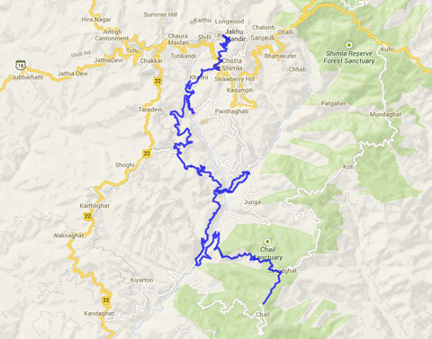
Route Map of Day 1.When her friends were backing out of the race on day two, it didn’t go down well with Monali. “They were pulling out saying it’s not possible to ride in rainy conditions. Although I’d be the first one to start shivering, I told them if we go last we can always tell people we left last, rather than going first and finishing last,” she joked. That worked like a soothing balm on a wound.
The race was more of a mental game than a physical one. And Monali more than compensated her physical limitations with her mental toughness. “Physically women are built in a certain way than men, so there’s isn’t any competition about it. When your body gives up, you mentally push yourself further than usual. That’s true for all.”
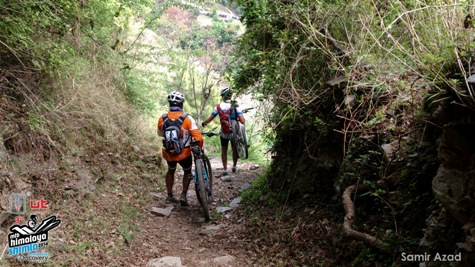
Riders go down a technical downhill section. Most riders carried their bikes on their shoulders down these slopes. (Picture: HASTPA)In a male-dominated sport, being a woman rider was as mentally challenging as the race itself, reveals Monali. When she walked into the race registration room teeming with mostly male riders, their reaction was one of awe and muted appreciation bordering on surprise. “People came up to me and asked if I really was one of the ‘real’ riders. They were surprised to see a woman participant. What is so amusing about a woman rider?” she said.
There were others who harangued her with horror stories on the ‘toughness’ of the race. But she tuned herself out of all those negative comments. “I wanted to enjoy, not prove that being a woman I am better than other women or men in the race,” she said.
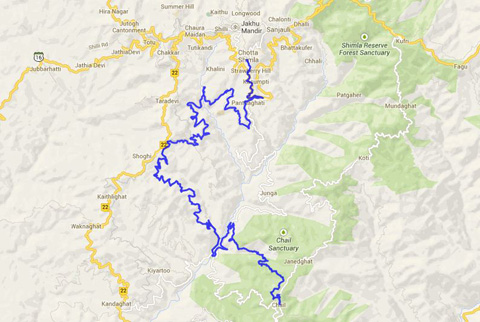
Race map day 2.Stereotyping people on the basis of their looks or gender is quite rampant in any sphere of life, informed 47-year-old Ajay Jaiman, another participant at the race. It’s been five years since Ajay took up cycling and he often meets women riders as well. “People who aren’t familiar or new to cycling will be quick to pass a judgment on a women rider. Simply being a woman doesn’t put you in a disadvantageous position because in a sport like MTB, you are competing against elements and gravity, not so much with other people. You may be big and strong, but a petite lady may be better than you. Power-to-weight ratio matters, not brute force.”
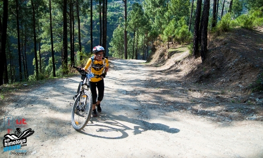
Alison Clews, 44, hiking the steep ascent on day 1. She would have to cycle another hour to reach the finish line. (Picture: HASTPA)Alison Clews agrees wholeheartedly. At 44, Scotswoman Alison was the oldest woman rider and also the winner in the women’s category. “I didn’t go to compete, but I wanted to see if I could finish. But men have a fundamentally different attitude than women. At some level, they have the pressure to win, to prove to someone.”
Vamini Sethi, 28, who stood second in women’s category and 24th overall, roots for Alison and said that John had high hopes from Alison, but didn’t expect her to come out as a winner. Not only did she win, but she proved to be a role model for many riders, said Sethi.
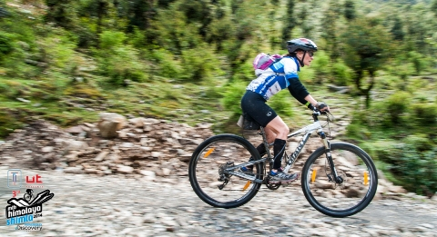
Alison Clews racing downhill on day 1. She told the Indian Express that her speed was almost close to 40km/hr downhill. (Picture: HASTPA)Even though Alison has finished an Ironman triathlon– a long-distance race, which involves swimming, cycling and a marathon one after the other — this was her first real mountain bike race. Before, she’d done only mild ‘off-road’ biking in and around Gurgaon-Faridabad’s forest area along with her cycling group Pedal Yatris. “Mountains are a different ball-game. People usually train months in advance for such races, but guess what? I got my road bike only two weeks before the race. Till then I was pedaling on a gym cycle,” she said.
The experience, as Alison describes it, was like “beginning with a clean slate” and extremely challenging. The choppy terrain, high altitude and relentless cycling grabbed her by the collar. “Six hours of non-stop riding wore me out mentally and physically. I got cramps several times, but my Ironman training taught me to keep moving forward. You don’t stop when you get cramps otherwise it gets worse. But at the same time, it’s important to slow down before you get exhausted. It’s a combination of mental, physical strength and focus that gets you through,” she said.
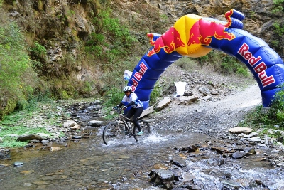
Vamini Sethi crossing the Red Bull checkpoint on Day 1. (Picture: HASTPA)Vamini too felt a stab of frustration during numerous steep uphill sections when her body gave up. During one of the vertiginous ascents she rode with Alison and discovered it was futile to match her speed in such punishing conditions. “Alison is a great uphill rider,” noted Vamini. “If I kept up with her we could’ve finished together. But you can’t speed up beyond a point so I let her go for the fear of injuring myself. You have to respect your limitations.”
As much as women respected each other for being a pillar of strength for everyone around, there was a healthy competition amongst them that brought out their best. Vamini learnt tenacity from Alison. “Alison wasn’t very fast, but she was consistent. She hardly got off her bike, which gave her that edge over us. When you’re on your bike, no matter what how slow you are, you will always be faster than someone who is off it.”
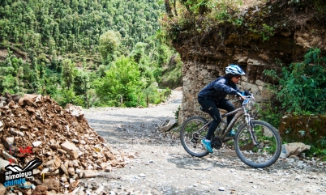
Vamini Sethi crouches low on the saddle and climbs on day two. She also busted her front brakes which also slowed down her pace. (Picture: HASTPA)A banker by profession, this was Vamini’s second MTB race. Her first ride was the MTB Himalaya last year in April, a back-breaking 7-day 500 km ride where she cried on day four and almost fell off a cliff on day five. Although she stood fourth in the women’s solo category, the humbling experience only made her wiser. “After having done 500 km, 130 km seemed like a piece of cake, but it never got easy. No matter how much you practice, nothing can prepare you short of being there. The route is different, people are new so building a rapport with them takes time,” she adds.
Half-way into the race, Vamini’s only riding partner tumbled over his cycle handlebar and fell face down on a scraggy bed of rocks while riding downhill. “He was bleeding and had to be escorted to an ambulance. That was totally unexpected,” she recalled. “Throughout the race I was alone.”
Without that anchor of support, she had only herself to fall back on. But such is the beauty of the sport that you’re never really alone and not a single rider, even if they are perfect strangers, will desert you when you’re in trouble. Winning is not as beautiful if you finish alone, said Vamini. “If a fellow rider helps you along the way, you will remember the race.” It was particularly challenging for Alison because she understands very little Hindi. The obvious language barrier, however, was a non-issue because she felt that “every single rider is going through the exact same emotions as you are, so you develop a bond instantly.”
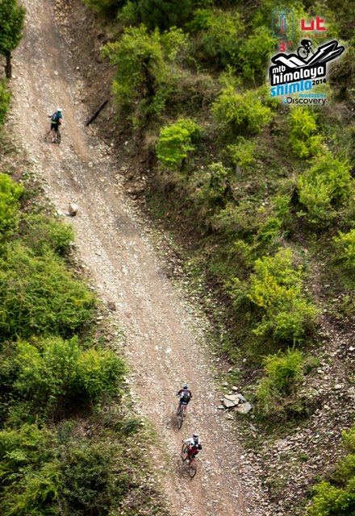
Riders making their way uphill. (Picture: HASTPA)Monali recounts a defining moment when she was on the verge of quitting. Uphills had crushed her legs with exhaustion and she desperately longed for downhills to ease tension on her calves and hamstrings. Every now and then she’d get off her bike, hike for a few minutes and get back on again till the pain somewhat subsided. That’s when Aditya came to her rescue. A senior BSF officer, Aditya was like an anchor that kept her ship from drifting away. “Aditya would go ahead of me and from some bend he would shout, “Downhill aa raha hai”. It turned out that there were no downhill sections for the next few kilometers, but he gave her hope that the finish line was near.
What also aided their performance was the lack of women participation. “The fact that not many women take part in such extreme events makes me feel great about myself. It gives me confidence to say that if I completed a 130 km race, nothing’s impossible in life,” said Vamini. She offers two most plausible reasons for this: “Firstly, most women don’t come because they think they aren’t physically strong. My experience has taught me it’s more of a mental game than physical. Even the elite riders struggled to reach the finish line. Secondly, women don’t get enough family support and people think they can’t do it. I am a married woman with a kid. This makes things more challenging. But I keep my in-laws and husband informed about my activities, so much so that my husband comes along with me for such events. After I did well last year in MTB Himalaya, she now expects me to bring home a medal every time I participate. That’s very encouraging.”
Alison suggests women should first get themselves physically in place and join a cycling group. “They will tell you how to handle a terrain, give you feedback on your riding skills and motivate you. Most of all, be 100 per cent behind your decision to participate. And be prepared to crawl to the finish line!”


{kind=link}
{kind=link}
{kind=link}
{kind=link}
{kind=link}
{kind=link}
{kind=link}
{kind=link}
{kind=link}
{kind=link}
{kind=link}
{kind=link}
{kind=link}
{kind=link}